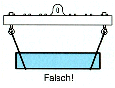
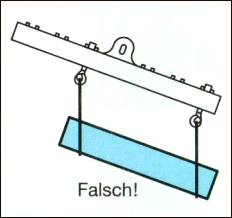
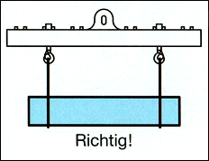
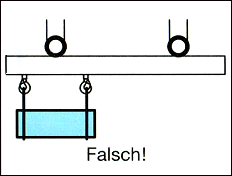
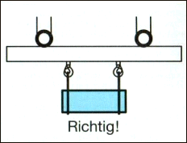

Durch die Verwendung von Traversen kann mit kleiner Hubhöhe auch in niedrigen Hallen angeschlagen werden.
Die Neigungswinkel der Anschlagmittel können dadurch bei langen Lasten verringert oder ganz aufgehoben werden.
Unter Traversen muss die Last so unterfangen sein, dass sie sich nicht übermäßig durchbiegt und ein Herausschießen der Last oder von Einzelteilen verhindert wird (Bilder 15-1 bis 15-5).
Einziger Nachteil ist das Eigengewicht der Traverse, das auf dem Typenschild jeder Traverse ablesbar ist.
Entsprechend dem Eigengewicht der Traverse reduziert sich das höchstmögliche Gewicht der Last.

Bild 15-1: Anschlagen mit umgekehrtem Neigungswinkel. Die Anschlagmittel können unter der Last hervorrutschen.

Bild 15-2: Außermittiges Anschlagen der Last an Traversen. Die Traverse hängt schief, die Last kann aus den Anschlagmitteln rutschen. Die Aufhängung der Traverse wird einseitig beansprucht.

Bild 15-3: Richtiges Anschlagen

Bild 15-4: Last ist außermittig angeschlagen. Das Gewicht wirkt nur auf das linke Hubseil.

Bild 15-5: Last ist mittig angeschlagen. Das Gewicht wird auf beide Hubseile verteilt.